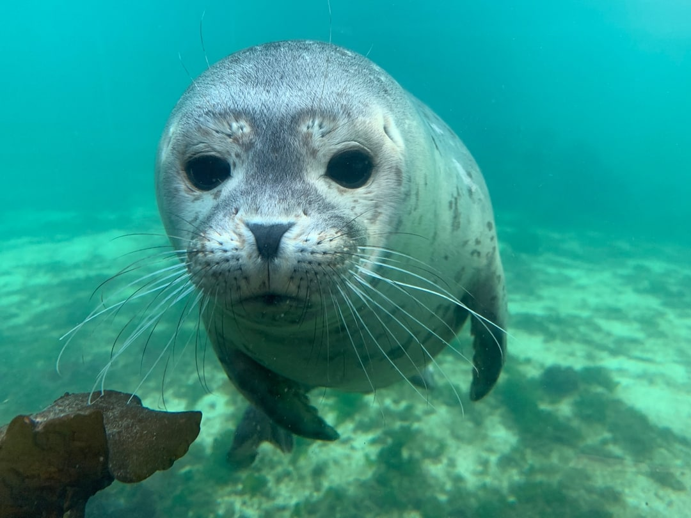

Anna Hansen 27.09.2023, kl. 10:00
The Coral Sea, a pristine and biodiverse marine paradise, is a treasure trove of life beneath the waves. In this captivating article, we embark on an underwater journey to uncover the secrets of this mesmerizing ecosystem and its astonishing inhabitants. From colorful coral gardens to enigmatic sea creatures, the Coral Sea offers a spectacle of natural beauty that continues to awe and inspire.
Dive deep into the crystal-clear waters of the Coral Sea as we introduce you to its charismatic marine residents. Discover the fascinating world of corals, where delicate polyps create sprawling colonies that provide shelter and sustenance to an array of marine life. Join us as we unravel the mysteries of coral reproduction and growth, and understand the crucial role these organisms play in maintaining the health of our oceans.
Venture further into the depths to encounter a dazzling array of fish species, from the striking clownfish darting among anemones to the graceful sea turtles gliding through the water. Learn about the intricate relationships between these species and the critical role they play in maintaining the delicate balance of the Coral Sea's ecosystem.
Seals come in various species, each with its own distinct characteristics. True seals, eared seals (sea lions), and the walrus make up this family. From the harbor seal's cuteness to the power of the elephant seal, they all have their place in the marine world.
Seals are perfectly suited for life in the water. Their streamlined bodies reduce water resistance, and their blubber layer provides insulation against cold waters. Powerful flippers help them glide through the ocean, while their ability to hold their breath for extended periods aids in hunting. Their keen underwater vision is a crucial asset for finding prey in the depths.
Seals hold a key position in the marine food chain. They feed on fish, squid, and crustaceans, helping to regulate their populations. Additionally, seals serve as prey for larger predators like sharks and orcas. Their excrement, rich in nutrients, fertilizes marine ecosystems, promoting the growth of vital organisms like phytoplankton, which absorb carbon dioxide from the atmosphere and help regulate the Earth's climate.